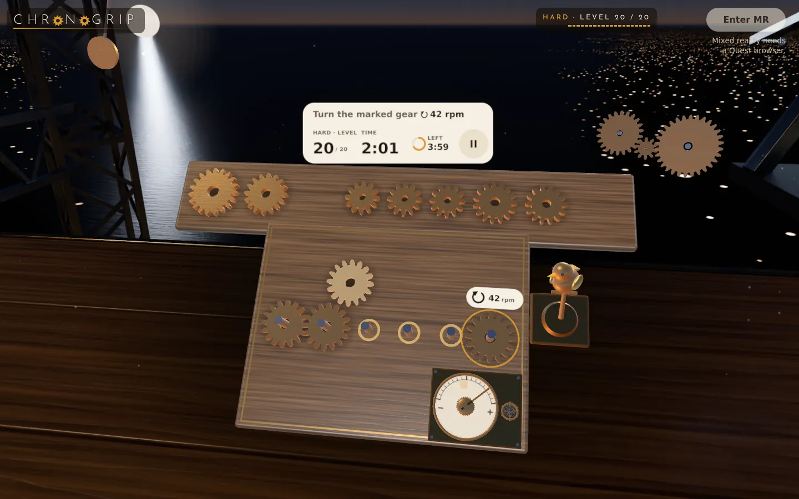
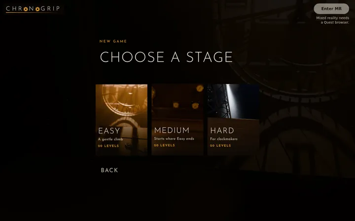
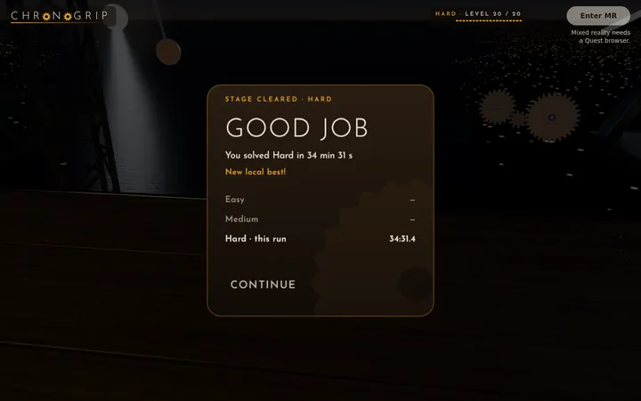

- 3 x 20
- Three stages, twenty levels each
- 2 to 6 min
- Time limit per level, growing with difficulty
- 40 x 30 cm
- One walnut tray, all within arm's reach
- 0
- Audio files: every note is played in code
IWhat it is
-
Hands first
No controllers. Pinch a gear, carry it and let go over an axle. Poke a menu button with your index tip. Pinch the regulator dial and roll your wrist like turning a key.
-
On your real table
In passthrough the tray looks for the table or tray table in front of you and stands flush with its near edge. You stay seated: nothing asks you to stand, turn or stretch.
-
Against the clock
Easy, Medium and Hard, twenty levels each. Every level is generated fresh, so you can't memorise a stage. Runs go on a local and a global top ten.
IIIn the game



IIIPlay it on Quest
- 1
Put on your Quest and open the Browser.
- 2
Go to chronogrip.online
- 3
Tap Play, then Enter MR. Put the controllers down and sit with a table in front of you.
No headset? Open the same address on a computer. Drag gears with the mouse and drag the dial's knob sideways to set the rate.
IVHow it's built
- IWSDK Runs the WebXR mixed-reality session and grabs the gears; the game reads thumb, index and wrist joints itself for pokes and the wrist twist.
- three.js Renders the tray, with involute gear teeth drawn in code and a solver that finds speed, direction and jams.
- Blender Renders the three rooms from scripts, and their clocks and pendulums move in time with the music.
- WebAudio Composes and plays each stage's theme, and synthesises every click, grind and chime.
Source on GitHub MIT licensed, with unit, fuzz and emulated-headset tests.